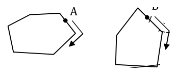
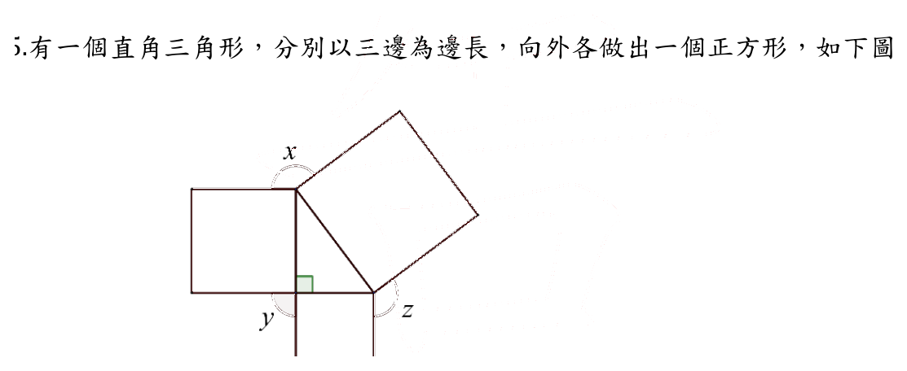
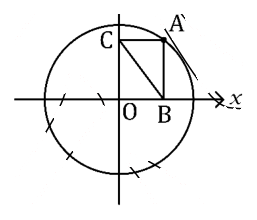
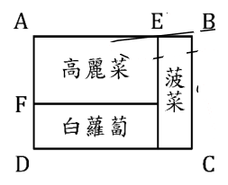
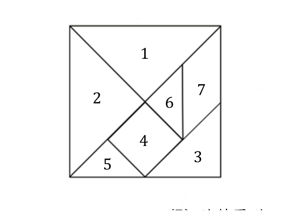
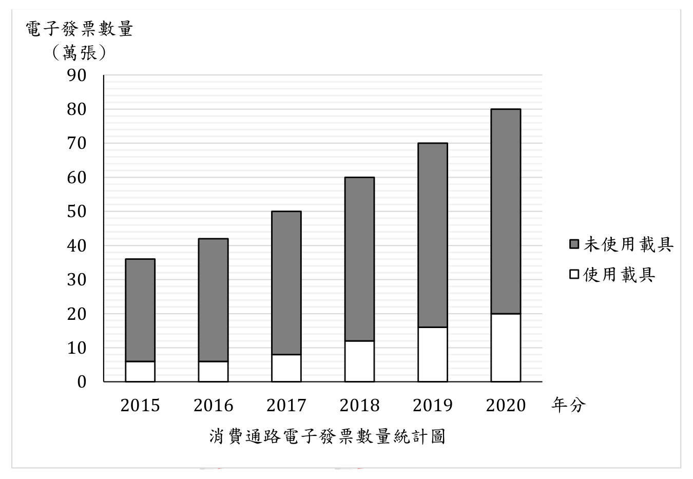

開卷有益 ／
教師檢定 ／ 國小・數學能力測驗 ／ 110 年110 年教師檢定國小・數學能力測驗試題與答案
這一頁是民國 110 年教師檢定國小・數學能力測驗的整份歷屆試題，共 26 題，題目與標準答案出自教育部教師資格考試歷屆試題（受託國立臺灣師範大學心理與教育測驗研究發展中心），其中 26 題附有詳解。以下逐題列出題幹、選項與答案；要計時作答或記錄成績，請用線上練習。
教育部原始場次代碼：tqa11030
線上作答這一科 →
全部 26 題
第 1 題
有兩個相似三角形，其面積比為9:16，問其周長比為何？
（A） 3 : 4（B） 4 : 3（C） 9 : 16（D） 81 : 256答案：（A）
詳解與考點 正解：相似圖形的對應邊長比稱為相似比k，周長是邊長的一次量，故周長比等於相似比k；面積是邊長的二次量，故面積比等於相似比的平方k²。本題已知面積比為9:16，要反推周長比，須先由面積比求出相似比：k²＝9/16，將分子、分母各自開平方得k=3/4，即相似比（亦即周長比）為3:4，故選（A）。驗算：若周長比為3:4，則面積比應為3²:4²＝9:16，與題目給定的面積比一致，確認無誤。
B：（B）4:3是把比值上下顛倒。面積比寫成9:16時，9對應的是面積較小的三角形，開平方後3仍應對應同一個較小的三角形；寫成4:3等於宣稱面積為9的三角形其周長反而較大，與大小關係矛盾。
C：（C）9:16是把面積比直接當成周長比，漏掉開平方這一步。這是最常見的誤答，因為題目給的數字原封不動出現在選項裡，容易讓人誤以為不必換算；但周長屬一次量、面積屬二次量，兩者的比值不可能相同（除非比值恰為1:1）。
D：（D）81:256是把方向做反了——先把9:16誤當成邊長比，再對其平方一次，得9²:16²＝81:256，等於多做了一次不該做的平方運算，暴露的是誤以為「由面積推邊長」也該用平方而非開方。
本題考點：相似形的長度比與面積比之間的次方關係。相似比為k時，長度量（邊長、周長）之比為k，面積量之比為k²；解題關鍵在辨認題目給的是幾次量、要求的是幾次量，由面積推長度須開平方、由長度推面積須平方，不可將兩者的比值直接互用。
第 2 題
小潔從 A 點出發，順時針沿著六邊形公園的外圍繞一圈；小銘從 B 點出發，順時針沿著五邊形公園的外圍繞一圈，如下圖： 問兩人各繞公園一圈後，兩人旋轉的角度相差多少？

（A） 0°（B） 12°（C） 180°（D） 360°答案：（A）
詳解與考點 正解：沿凸多邊形外圍完整繞行一圈的轉角和就是外角和，不因邊數改變。六邊形的外角和＝360°，五邊形的外角和也＝360°，相差＝360°－360°＝0°，選A。
B：（B）12°不是兩個多邊形外角和的差；兩者外角和皆為360°。
C：（C）180°把個別角或內角和的概念誤當成完整繞行的轉角和。
D：（D）誤以為邊數不同會使繞行一圈的總轉角不同；完整繞行任一凸多邊形皆轉360°。
本題考點：凸多邊形外角和；沿邊界同方向行走一圈時，所有轉角相加恆為360°，與邊數無關。
第 3 題
已知 a、b、c 是實數，下列何者恆真？
（A） \(3 + 2a = 5a\)（B） \(a + b \ge a - b\)（C） \(|a| + |b| = |a + b|\)（D） \(a^2 + \frac{1}{4}b^2 \ge ab\)答案：（D）
詳解與考點 正解：D式可整理為a²+b²/4-ab=(a-b/2)²，即a²-2·a·(b/2)+(b/2)²配方後成為(a-b/2)²。任何實數的平方必大於等於0，即(a-b/2)²≥0恆成立，故a²+b²/4-ab≥0，移項即得a²+b²/4≥ab對所有實數a、b恆成立，故選D。
A：「3+2a=5a」整理得3=3a，即a=1，此式僅在a=1時成立，例如a=0時左式為3、右式為0，兩者不相等，並非對所有實數a恆真。
B：「a+b≥a-b」兩邊同減a、再加b，整理得2b≥0，即b≥0，僅在b為非負數時成立；當b為負數時，例如a=0、b=-1，左式為-1、右式為1，-1≥1不成立，並非恆真。
C：「|a|+|b|=|a+b|」僅在a、b同號或其中一者為0時成立，此為絕對值不等式取等號的特殊情況。當a、b異號時則不成立，例如a=1、b=-1時，|a|+|b|=1+1=2，但|a+b|=|1-1|=0，2不等於0，並非對所有實數恆真。
本題考點：實數不等式的恆真判斷與配方法。核心技巧是利用「任何實數的平方必為非負」將二次式配方成完全平方式以證明不等式恆成立；同時須具備反例思維，對疑似恆真的等式或不等式，代入特殊值檢驗是否存在反例。
第 4 題
某張考卷的試題設計與計分方式如下: (1) 選擇題 20 題，每題 x 分 (2) 填充題 20 格，每格 y 分 (3) 總分為 100 分，答錯均不倒扣 已知甲答對 15 題選擇題、15 格填充題；乙答對 18 題選擇題、12 格填充題，且甲的總分比乙的總分多 3 分，問甲的總分為何？
（A） 69（B） 72（C） 75（D） 78答案：（C）
詳解與考點 正解：設選擇題每題 x 分、填充題每格 y 分。全卷選擇題 20 題、填充題 20 格，總分 100 分，得 20x+20y=100，兩邊除以 20，得 x+y=5。甲答對 15 題選擇、15 格填充，總分為 15x+15y=15（x+y）＝15×5=75 分，這一步不需要再解出 x、y 個別的值即可得到甲的總分，故甲的總分為 75 分，選（C）。若要進一步驗證，可用「甲比乙多 3 分」這個條件解出 x、y：乙答對 18 題選擇、12 格填充，總分為 18x+12y；由（15x+15y）－（18x+12y）＝3，整理得 －3x+3y=3，即 y-x=1，與 x+y=5 聯立解得 x=2、y=3，代入乙的總分：18×2+12×3=36+36=72，甲比乙多 75-72=3 分，與題目所給條件相符，驗算一致。
B：（B）72 分恰為乙的實際得分（18×2+12×3=72），是把乙的總分誤當成題目所問的甲的總分，屬於作答對象張冠李戴的錯誤，而非計算過程本身有誤。
A：（A）69 分可能是把「甲比乙多 3 分」的方向看反，誤以為甲比乙少 3 分，逕以乙的 72 分為基準倒扣 3 分（72-3=69）而得，是差距方向判斷錯誤所致。
D：（D）78 分可能是在已求出甲的正確總分 75 分之後，又重複加上題目所給的差距 3 分（75+3=78），等於把「相差 3 分」這個已經用於驗算的條件，誤當成還須再加一次的量，屬於重複計算。
本題考點：聯立方程式應用題與量的化簡技巧。本題的關鍵在於發現甲的總分 15x+15y 可直接提出公因式化為 15（x+y），而 x+y 已由「總分 100 分」這個條件直接求出，因此不必解出 x、y 個別的值即可得到答案；「甲比乙多 3 分」則是用來解出 x、y 個別數值以供驗算的輔助條件，作答時應先辨識題目真正需要哪個組合量，避免多繞一層計算。
第 5 題
有一個直角三角形，分別以三邊為邊長，向外各做出一個正方形，如下圖： 問 \(\angle x + \angle y + \angle z = ?\)

（A） 270°（B） 360°（C） 450°（D） 條件不足，無法計算答案：（B）
詳解與考點 正解：每個頂點周圍的角和為360°，兩個外作正方形各提供90°，所以缺口角等於180°減去該頂點的三角形內角。設三角形三內角為A、B、C，則x=180°－A、y=180°－B、z=180°－C。x+y+z=540°－(A+B+C)＝540°－180°＝360°，選B。
A：（A）270°未正確使用三角形內角和180°與三個缺口角的關係。
C：（C）450°同樣不符合540°－180°＝360°的演算。
D：（D）三角形內角和固定為180°，故不必知道各內角個別數值也能求出定值。
本題考點：周角與三角形內角和；逐頂點以360°扣除兩個直角及內角，再把三個缺口角相加。
第 6 題
在直角坐標平面上有一半徑為\(r\)的圓, 圓心\(O\)點在原點上。在圓周上任取一點\(A\), 過\(A\)點作與\(x\)、\(y\)兩軸垂直的線段\(\overline{AB}\)、\(\overline{AC}\), 如下圖: 問 \(\overline{BC}\) 與半徑\(r\)的關係為何?

（A） \(\overline{BC} > r\)（B） \(\overline{BC} = r\)（C） \(\overline{BC} < r\)（D） 條件不足, 無法判斷答案：（B）
詳解與考點 正解：設圓心O為原點，圓半徑為r，圓周上一點A的坐標可設為(a, b)，因A在圓上，滿足圓方程式a²+b²=r²。因AB垂直x軸，B是A在x軸上的投影點，坐標為(a, 0)；因AC垂直y軸，C是A在y軸上的投影點，坐標為(0, b)。由兩點距離公式，BC=√[(a-0)²+(0-b)²]=√(a²+b²)。將a²+b²=r²代入，得BC=√(r²)=r（r為正數，故取正根）。由於A是圓周上任取的一點，此推導對任意a、b皆成立，故BC恆等於半徑r，答案為B。
A、C：「BC>r」（A）與「BC<r」（C）皆與此代數推導矛盾──BC=√(a²+b²)，而a²+b²恰好等於r²，此為A點在圓上的定義條件，故BC必然恆等於r，不會因A點在圓周上位置不同而大於或小於r，兩選項皆誤把BC當成隨A點位置變動的變量，忽略了BC的平方式與圓方程式其實是同一個式子。
D：「條件不足，無法判斷」誤以為BC的大小會隨A點在圓周上的位置改變而不確定；但由於B、C分別是A在x軸、y軸上的正交投影點，OBAC四點恰構成一個矩形，BC即為此矩形的另一條對角線，其長度與OA相等，而OA正是半徑r，故不論A點落在圓周何處，BC=r的關係恆定成立，並非無法判斷。
本題考點：坐標平面上圓的方程式與兩點距離公式的綜合應用。解題關鍵在於利用圓周上任一點的坐標必滿足圓方程式x²+y²=r²這項定義條件，將投影點B、C的坐標代入距離公式後，會發現BC²恰等於圓方程式左式，因此可直接判定BC恆等於半徑，屬於代數關係與幾何圖形相互印證的典型題型。
第 7 題
有甲、乙、丙、丁四個數, 若甲 + 1 = 乙 - 2 = 丙 + 3 = 丁 - 4, 則甲、乙、丙、丁這四個數的大小關係為何?
（A） 丙 < 甲 < 乙 < 丁（B） 丙 < 甲 < 丁 < 乙（C） 丁 < 甲 < 乙 < 丙（D） 丁 < 乙 < 甲 < 丙答案：（A）
詳解與考點 正解：設甲加1等於乙減2等於丙加3等於丁減4等於k（共同值）。由此解出：甲等於k減1，乙等於k加2，丙等於k減3，丁等於k加4。將四者統一以k為基準比較其偏移量：丙為k減3（最小，偏移負3）、甲為k減1（偏移負1）、乙為k加2（偏移正2）、丁為k加4（最大，偏移正4）。因為負3小於負1小於正2小於正4，故正確大小順序為丙小於甲小於乙小於丁，選（A）。
B：「丙小於甲小於丁小於乙」前兩項丙小於甲正確，但將乙、丁的順序對調——乙為k加2、丁為k加4，因2小於4，乙應小於丁，此排序把乙、丁順序顛倒，故錯誤。
C：「丁小於甲小於乙小於丙」把丁、丙的位置整個對調——丁其實是四者中最大者（k加4），丙才是四者中最小者（k減3），此排序將最大與最小的位置完全顛倒，故整體排序方向錯誤。
D：「丁小於乙小於甲小於丙」同樣把丁誤置於最小、丙誤置於最大的位置（實際應相反），又將甲、乙順序對調（甲偏移負1應小於乙偏移正2），兩處錯誤疊加，與正確的大小關係完全不符。
本題考點：以共同變數（此處設為k）表示多個未知數，再依各自偏移量比較大小的代數推理。解題關鍵在於將「甲加1等於乙減2等於丙加3等於丁減4」統一設為同一個k，正確解出各未知數以k表示的式子，再比較各式中常數項的大小，常數項越大者該數越大。
第 8 題
有\(A\)、\(B\)兩種圓柱形杯子，\(B\)是\(A\)的等比例縮小版。已知\(A\)杯的高度是\(8\text{cm}\)、\(B\)杯的高度是\(4\text{cm}\)，問裝滿一個\(A\)杯的水量，可以裝滿幾個\(B\)杯？
（A） 2（B） 4（C） 8（D） 16答案：（C）
詳解與考點 正解：B杯是A杯的等比例縮小版，兩杯對應的長度縮小比例＝B杯高度÷A杯高度＝4÷8=1/2。對於等比例縮放的立體圖形，體積比等於對應長度比的三次方，故B杯體積÷A杯體積＝(1/2)³＝1/8，即A杯的容量是B杯的8倍。因此裝滿一個A杯的水量，可以裝滿8個B杯，選C。驗算：若B杯半徑亦為A杯的1/2，代入圓柱體積公式V=πr²h，B杯體積恰為A杯的(1/2)²×(1/2)=1/8，與上述結果一致。
A：「2」是誤把長度縮小比例(1/2)的倒數直接當成體積倍數，忽略體積是三維量，並未進行立方運算，只做了一次線性換算。
B：「4」是誤將長度比的平方(1/2)²＝1/4的倒數當成體積倍數，把立體的體積關係誤用成面積（二維量）的縮放關係，只算了平方而非立方。
D：「16」是把冪次算過了頭，超出正確的三次方（體積）關係所得的錯誤倍數，反映對「長度、面積、體積分屬一次、二次、三次量」的關係混淆。
本題考點：相似立體的長度比與體積比關係。兩個形狀相似（等比例縮放）的立體圖形，其長度比為k時，表面積比為k²、體積比為k³；解題關鍵在正確判斷題目所求的是幾次量的比值，並據以決定平方或立方運算，避免把長度、面積、體積三種不同次方的縮放關係混用。
第 9 題
有一些關於三角形與四邊形的敘述如下: 甲、三角形的內心一定在三角形內部 乙、三角形的外心一定在三角形外部 丙、三角形的內角和<四邊形的內角和 丁、三角形的外角和<四邊形的外角和 哪些敘述是正確的?
（A） 只有甲、丙（B） 只有乙、丁（C） 只有甲、乙、丙（D） 只有甲、丙、丁答案：（A）
詳解與考點 正解：三角形的內心為三個內角平分線的交點，無論銳角、直角或鈍角三角形，內心恆位於三角形內部，故甲成立；三角形內角和固定為180°，四邊形內角和固定為360°，180°<360°恆成立，故丙也成立。甲、丙皆正確，其餘敘述皆有誤，故選（A）只有甲、丙。
B（只有乙、丁）：乙「三角形的外心一定在三角形外部」不成立——外心的位置會隨三角形形狀而改變：銳角三角形的外心在三角形內部，直角三角形的外心恰在斜邊中點（三角形邊上），只有鈍角三角形的外心才在三角形外部，並非「一定」在外部；丁「三角形的外角和<四邊形的外角和」也不成立——任意凸多邊形（不論邊數多寡）的外角和恆為360°，三角形外角和與四邊形外角和其實相等，並非三角形外角和較小，故乙、丁兩敘述皆錯誤，此選項不能選。
C（只有甲、乙、丙）：甲、丙皆正確，但乙的敘述並不成立——三角形外心的位置會隨其為銳角、直角或鈍角三角形而分別落在三角形內部、邊上或外部，並非「一定」在外部，含乙的選項不成立。
D（只有甲、丙、丁）：甲、丙皆正確，但丁的敘述並不成立——任意凸多邊形的外角和恆為360°，與邊數無關，三角形外角和與四邊形外角和其實相等，並非三角形外角和較小，含丁的選項不成立。
本題考點：三角形的內心、外心性質與多邊形內角和、外角和公式。內心恆在三角形內部；外心位置隨三角形銳角、直角、鈍角而異；n邊形內角和為(n-2)×180°，隨邊數增加而增加；但任意凸多邊形的外角和恆為360°，與邊數無關，是常見的比較陷阱。
第 10 題
算式「\(70 \div \frac{5}{14} - 70 \div \frac{5}{7}\)」的答案與下列何者的答案相同?
（A） \(70 \div (\frac{5}{14} - \frac{5}{7})\)（B） \(70 \times (\frac{5}{14} - \frac{5}{7})\)（C） \(70 \div (\frac{14}{5} - \frac{7}{5})\)（D） \(70 \times (\frac{14}{5} - \frac{7}{5})\)答案：（D）
詳解與考點 正解：除以一個分數等於乘以其倒數，故原式 70÷(5/14)-70÷(5/7)=70×(14/5)-70×(7/5)。此時兩項有公因數70，依乘法對分配律的逆用，可將70提出合併：70×(14/5)-70×(7/5)=70×((14/5)-(7/5))，這正是選項D的算式，兩式在代數操作上完全等價。驗算原式：70÷(5/14)=70×14/5=980/5=196；70÷(5/7)=70×7/5=490/5=98；196-98=98。D式：70×((14/5)-(7/5))=70×(7/5)=490/5=98，與原式數值一致，故選（D）。
A：（A）70÷((5/14)-(5/7)) 是先把兩個分數（5/14 與 5/7=10/14）相減得 -5/14，再用70去除，計算為70÷(-5/14)=70×(-14/5)=-196。此算式把原式中先各自除、再相減的順序，誤改成先相減、再用整體去除，運算順序與原式不同，數值也不相等。
B：（B）70×((5/14)-(5/7)) 同樣是先對兩個原分數（未取倒數）相減，5/14-5/7=5/14-10/14=-5/14，再乘以70，得70×(-5/14)=-25。此誤把除以分數直接類比成乘以同一分數，漏掉了除法要轉換成乘以倒數這一步，數值不等於原式。
C：（C）70÷((14/5)-(7/5)) 是把兩個分數的倒數（14/5、7/5）直接相減，得7/5，再用70去除，計算為70÷(7/5)=70×5/7=50。此算式把倒數相減和除法混合使用，卻沒有遵循原式先各自轉換為乘法、再合併同類項的正確步驟，屬於運算順序上的混淆，數值同樣不等於原式。
本題考點：分數除法的等價變形與乘法分配律。除以分數等於乘以其倒數是變形的第一步；在都轉換成乘法之後，若各項有公因數（本題為70），才可依分配律提出合併為70乘以差的形式。解題時須留意先轉換成乘法、再合併，與先合併、再轉換兩種順序不可互換，這是本題四個選項刻意設計的辨別點。
第 11 題
魔術師邀請觀眾進行魔術互動，請觀眾在 10 到 99 之間選取一個幸運數，將幸運數乘以 10 後，再減去此幸運數，接著把計算結果告訴魔術師。下列何者不可能是觀眾的計算結果？
（A） 81（B） 90（C） 117（D） 477答案：（A）
詳解與考點 正解：設觀眾選取的幸運數為 n，依題意 10≤n≤99（n 為整數）。計算過程是先將 n 乘以 10 得 10n，再減去 n 本身，即 10n-n=9n，故計算結果必為 9 的倍數，且對應的 n 必須落在 10 到 99 之間，換算成結果的範圍即為 9×10=90 到 9×99=891 之間的 9 的倍數。選項（A）81=9×9，對應的 n=9，但 9 小於 10、不在題目限定的「10 到 99」範圍內，因此 81 不可能是觀眾的計算結果，故選（A）。
B：90=9×10，對應 n=10，剛好落在範圍下界，屬合法的幸運數，故 90 可能發生。
C：117=9×13，對應 n=13，在 10 到 99 之間，屬合法的幸運數，故 117 可能發生。
D：477=9×53，對應 n=53，同樣在 10 到 99 之間，屬合法的幸運數，故 477 可能發生。
本題考點：文字題轉譯為代數式的能力，將「乘以 10 後再減去自身」轉譯為 10n-n=9n，並掌握「結果是 9 的倍數」僅是必要條件，還須反推對應的 n 是否落在題目限定的範圍內，才能判斷該結果是否真正可能發生。
第 12 題
王老爹有 47 隻羊, 想分給 3 個兒子, 他說:「先向隔壁老李借一些羊來湊成一個數, 然後老大分得這個數的三分之一、老二分得這個數的四分之一、老三分得這個數的五分之一; 這樣可以把 47 隻羊全分完, 還可以把向老李借的羊都還給他!」依照這樣的分法, 下列敘述何者正確?
（A） 老大得到 16 隻羊（B） 老二得到 15 隻羊（C） 老三得到 10 隻羊（D） 向老李借 1 隻羊答案：（B）
詳解與考點 正解：設向老李借b隻羊，湊成的總數為47+b。依題意，老大分得(47+b)/3、老二分得(47+b)/4、老三分得(47+b)/5，三人分得的羊總和須等於原有的47隻，即(47+b)×(1/3+1/4+1/5)＝47。先求括號內三分數之和：1/3=20/60、1/4=15/60、1/5=12/60，相加得47/60。代入原式：(47+b)×(47/60)＝47，兩邊同除以47，得(47+b)/60=1，解得47+b=60，即b=13。湊成的總數為60隻：老大＝60÷3=20隻，老二＝60÷4=15隻，老三＝60÷5=12隻，三人合計20+15+12=47隻，與原有47隻相符，借來的13隻歸還老李，選項B「老二得到15隻羊」正確，故選B。
A：「老大得到16隻羊」有誤，老大應得60÷3=20隻，並非16隻，此誤答是未以正確的湊成總數60為基準所致的誤算。
C：「老三得到10隻羊」有誤，老三應得60÷5=12隻，並非10隻，同樣是未以正確的湊成總數60為基準所致的誤算。
D：「向老李借1隻羊」有誤，實際應借13隻羊，湊成的總數60才能同時被3、4、5整除且三人各分得整數隻羊；借1隻僅得48隻，48無法被3、4、5同時整除出符合題意的整數分配。
本題考點：分數應用題中湊成公倍數以利整除分配的解題策略。此類題型的關鍵是先求三個分母（3、4、5）的公因子組合使原有總數能被整除分配，再透過(原有數＋借入數)×(各分數之和)＝原有數列出方程式求解借入數，最後代回驗算各人所得之和是否等於原有總數。
第 13 題
王老先生有塊矩形的土地 ABCD, 他想要在 \(\overline{AB}\)、\(\overline{AD}\) 上分別找到 E、F, 將這塊土地劃分成三塊矩形土地, 面積依照 3:2:1 的比例分別種高麗菜、白蘿蔔和菠菜, 如下圖: 若 \(\frac{\overline{AF}}{\overline{FD}} = a\) 且 \(\frac{\overline{AE}}{\overline{EB}} = b\), 試求 \(ab = ?\)

（A） \(\frac{2}{15}\)（B） \(\frac{3}{10}\)（C） \(\frac{10}{3}\)（D） \(\frac{15}{2}\)答案：（D）
詳解與考點 正解：三塊矩形面積比為3:2:1；同高的前兩塊面積比等於底邊比，且下方一塊的高度比例由其面積與前兩塊總面積決定。前兩塊同高，AE:EB=3:2，故b=AE/EB=3/2。設每份面積為t，前兩塊面積和＝3t+2t=5t，另一塊為1t，因此AF:FD=5:1，a=5。ab=5×3/2=15/2，選D。
A：（A）2/15是15/2的倒數，把a、b的比值方向顛倒。
B：（B）3/10未將a=5與b=3/2相乘。
C：（C）10/3不符合5×3/2=15/2的結果。
本題考點：矩形面積比與邊長比；同高矩形的面積比等於底邊比，再以面積總和對應分割高度求各段比值。
第 14 題
教師要進行「面積大小的直接比較」教學活動，準備了兩組長方形圖卡如下： 甲組 乙組 哪些組的兩張圖卡可以進行面積大小的直接比較？
（A） 甲、乙都可以（B） 甲、乙都不可以（C） 甲可以、乙不可以（D） 甲不可以、乙可以答案：（A）
詳解與考點 正解：面積大小的「直接比較」是指不需要透過測量、計算或分割重組，只要把兩張圖卡直接疊合比對，就能判斷哪一張面積較大的方法；當兩張長方形圖卡有一邊長度相同、或其中一張能完全疊入另一張範圍內時，便可用直接疊合的方式比較面積大小。依題目所附甲組、乙組圖卡的邊長關係，兩組圖卡皆符合可直接疊合對齊比較的條件，因此甲、乙兩組都能用直接比較的方式呈現面積大小關係，選（A）。
B：（B）「甲、乙都不可以」的判斷方向與正確結論相反，若兩組圖卡確實存在可對齊疊合之處，就不應判定為都不可以。
C：（C）「甲可以、乙不可以」只認可其中一組，可能誤判乙組圖卡沒有共同邊可疊合對齊，但依題目所附圖卡，乙組同樣具備能直接疊合比較的邊長關係。
D：（D）「甲不可以、乙可以」同樣只認可其中一組，且與 C 恰好相反，可能是誤判甲組圖卡的邊長彼此交錯、找不到共同邊可對齊疊合，但依題目所附圖卡，甲組同樣具備能直接疊合比較的邊長關係。
本題考點：面積比較的教學方法分級，即「直接比較（疊合）→間接比較（藉助第三者、方格計數）→切割重組」的難度層次。直接比較的適用條件是兩圖形有共同邊或其中一圖形可完全疊入另一圖形範圍內；教師設計教材時須先確認圖卡邊長關係是否滿足此條件，才能判斷該組是否適合作為「直接比較」的教學素材。
第 15 題
教師想用生活上的情境說明「分配律」的意義,有兩個情境如下: 甲、將一盒5公斤的櫻桃分裝成2公斤和3公斤,若每公斤的售價一樣,則「賣出2公斤櫻桃的錢加上3公斤櫻桃的錢」和「賣出5公斤櫻桃得到的錢」相同 乙、某人買了帽子、衣服和褲子各一件,「先算帽子和衣服的錢,再加上褲子的錢」和「先算衣服和褲子的錢,再加上帽子的錢」的總價一樣 問哪些情境適合說明「分配律」的意義？
（A） 甲、乙都適合（B） 甲、乙都不適合（C） 甲適合、乙不適合（D） 甲不適合、乙適合答案：（C）
詳解與考點 正解：分配律指乘法對加法的分配，即 a×(b+c)＝a×b+a×c，其核心特徵是同一個乘數分配到加法算式中的兩個加數上。情境甲中，每公斤售價為固定值 p（同一乘數），賣出2公斤櫻桃的錢加上3公斤櫻桃的錢＝2×p+3×p，賣出5公斤櫻桃得到的錢＝5×p=(2+3)×p；兩者相等的原因正是 2p+3p=(2+3)p=5p，即單價 p 對「2公斤加3公斤」這個加法算式的分配，完全符合分配律的結構，故甲適合用來說明分配律。情境乙中，帽子、衣服、褲子三項各為不同的金額，並非同一乘數分配到不同加數，先算帽子和衣服的錢再加褲子的錢，與先算衣服和褲子的錢再加帽子的錢，比較的是三個不同金額相加時，改變分組方式與運算順序所得的總和是否相同，屬於加法的結合律與交換律，並未出現一個固定乘數分配到兩個加數上的乘法運算，故乙不適合用來說明分配律。甲適合、乙不適合，故選（C）。
A：甲確實適合，理由如前述；但乙比較的是三個不同金額間分組與運算順序的等價關係，屬加法的結合律與交換律，並非乘法對加法的分配，故乙不適合，A選項因乙的判斷有誤而不成立。
B：乙不適合的判斷正確，但甲情境中單價 p 確實對「2公斤＋3公斤」的加法算式產生分配關係（2p+3p=5p），符合分配律的定義，故甲應屬適合，B選項因甲的判斷有誤而不成立。
D：此選項對甲、乙的判斷恰與正確答案相反——甲情境的單價分配關係正是分配律的典型範例，故甲應屬適合而非不適合；乙情境則因缺乏同一乘數分配到兩個加數的結構，應屬不適合而非適合，D選項兩項判斷皆與正解相反，故不成立。
本題考點：加法與乘法運算律的辨析——分配律（乘法對加法的分配）、結合律與交換律（加法中改變分組或順序不影響總和）。解題關鍵在辨識情境中是否存在同一個乘數分配到加法算式的兩個加數上，若僅是多個不同數值相加時改變分組或順序，則屬結合律／交換律而非分配律。
第 16 題
教師請學童分組進行專題探究,下列是三組學童所調查的主題與使用的統計圖: 甲、調查校園中的各種鳥類，並以長條圖呈現各種鳥類的數量 乙、調查全校學童最喜歡的圖書類型，並以圓形圖呈現各類型的人數 丙、調查全校學童假日休閒活動類型，並以折線圖呈現各類型的人數百分比 根據學童所調查的資料，哪幾組學童所使用的統計圖是合適的？
（A） 只有甲（B） 只有甲、乙（C） 只有甲、丙（D） 只有乙、丙答案：（B）
詳解與考點 正解：甲組調查「校園中各種鳥類的數量」，鳥類種類間彼此獨立、無大小或順序關係，屬離散的類別資料，適合用長條圖比較各類別數量的多寡，用法正確；乙組調查「全校學童最喜歡的圖書類型」，因為每位學童只能歸屬一種類型、各類型人數加總即為全校學童總數，正好符合圓形圖用扇形面積呈現「各部分占整體比例」的特性，用法也正確。甲、乙用法皆合適，其餘丙組不合適（詳見下段），故合適的組別為甲、乙，選B。
A：只有甲遺漏了乙組。乙組所調查的圖書類型人數同樣具備「各類別互斥、加總等於全體」的結構，適合以圓形圖呈現占比，並非只有長條圖一種圖表能正確使用，故不能只認甲組合適而排除乙組。
C：只有甲、丙誤將丙組視為合適。丙組調查「假日休閒活動類型的人數百分比」卻用折線圖呈現，但活動類型之間並無自然的順序或連續變化關係，折線圖以線段連接資料點，容易讓人誤以為類別之間存在遞增遞減的趨勢；活動類型屬分立類別，應改用長條圖或圓形圖呈現，故丙組用法不合適，不應與甲組並列。
D：只有乙、丙同樣誤將丙組視為合適，且遺漏了甲組。甲組以長條圖呈現各種鳥類數量，是類別資料比較數量最基本且正確的圖表選擇，不應被排除在合適組別之外。
本題考點：統計圖表類型與資料性質的對應。長條圖適合比較各獨立類別的數量或次數；圓形圖適合呈現各類別占整體的比例，各類別須互斥且加總等於全體；折線圖用於呈現具連續性或時間序列的資料變化趨勢，不適合用來比較彼此獨立、無自然順序的類別資料。作答時須先辨認資料屬於「類別比較」「部分與整體」或「連續變化」，再選擇對應圖表。
第 17 題
根據 van Hiele 幾何認知發展層次,為了讓視覺期的學童瞭解七巧板的 4 號圖形 (如下圖)是正方形,教師可以採取何種策略?

（A） 切割圖形（B） 旋轉圖形（C） 用量角器量四個角（D） 用尺量四個邊的長度答案：（B）
詳解與考點 正解：依 van Hiele 幾何認知發展層次，視覺期（visualization level）的學童是憑整體外觀的視覺印象辨認形狀，尚未能依邊長、角度等幾何性質進行分析推理。七巧板第4號圖形因擺放角度傾斜，外觀看起來像菱形，學童單憑視覺印象不易認出它其實是正方形；此時最適合的策略是將圖形旋轉至水平擺放的常見樣貌，讓學童單純透過視覺比對就能認出它是正方形，故選B「旋轉圖形」。
A：切割圖形是將既有圖形拆解重組，屬於操作性的組合活動，與單純辨認既有圖形形狀是否為正方形的視覺目標無關，並不能幫助學童單憑視覺確認圖形類別。
C：用量角器量四個角，是依「角度」這項幾何性質進行判斷與驗證，需要學童具備測量與分析圖形性質的能力，這已屬於 van Hiele 分析期（analysis level）才具備的能力，對仍處於視覺期、僅能整體辨識形狀的學童並不適用。
D：用尺量四個邊的長度，同樣是依「邊長」這項幾何性質進行判斷，屬於分析期的思維方式，要求學童透過測量數據推論圖形類別，超出視覺期學童僅憑整體外觀辨認形狀的能力範圍。
本題考點：van Hiele 幾何認知發展層次理論——視覺期（僅憑整體外觀辨認圖形）、分析期（依邊長、角度等性質分析圖形）、非形式演繹期等；教學上對視覺期學童宜透過改變圖形擺放方向、增加辨認經驗等視覺化策略協助其認識圖形，而非提早要求以測量、分析等方式驗證圖形性質。
第 18 題
對剛學加減問題的學童而言，下列哪一個問題最為困難？
（A） 桌上有8塊餅乾，弟弟吃掉了3塊，剩下幾塊餅乾？（B） 桌上原有8瓶紅茶，媽媽又放了3瓶，現在共有幾瓶紅茶？（C） 教室裡有8位學童在看書，3位學童在畫圖，一共有幾位學童？（D） 桌上有一些餅乾，弟弟吃掉了8塊，還剩下3塊，桌上原有幾塊餅乾？答案：（D）
詳解與考點 正解：加減應用問題依「已知量」與「未知量」在問題結構中的位置，可分為「結果未知」「改變量未知」「起始量未知」等類型，其中「起始量未知」型因需要逆向運用加減互逆關係求解，對剛學加減法的學童而言認知負荷最高。選項（D）「桌上有一些餅乾，弟弟吃掉了8塊，還剩下3塊，桌上原有幾塊餅乾？」屬於典型的「起始量未知」問題：題目直接給出的是「拿走的量」（8塊）與「剩下的量」（3塊），要求的卻是「一開始有多少」，學童必須理解「原有＝拿走＋剩下」，也就是運用加法（8+3）反向推算起始量，而不能像其他題型那樣順著題意直接列出算式，這種逆向思考的要求使其成為四個選項中最困難者，故選（D）。
A：「桌上有8塊餅乾，弟弟吃掉了3塊，剩下幾塊餅乾？」屬於「結果未知」的直接減法問題，已知起始量（8塊）與拿走量（3塊），求結果，未知數在算式最後，學童依題意直接列式8-3即可求解，屬於加減法最基本、最容易理解的題型。
B：「桌上原有8瓶紅茶，媽媽又放了3瓶，現在共有幾瓶紅茶？」同屬「結果未知」的直接加法問題，已知起始量與增加量，求結果，未知數同樣在算式最後，學童只需依題意直接列式8+3。
C：「教室裡有8位學童在看書，3位學童在畫圖，一共有幾位學童？」是兩個並存子集合的合併型問題（結果未知），已知兩個部分量，求全部總量，同樣是未知數在最後、依題意直接列式加法（8+3）即可求解，不涉及逆向推算。
本題考點：加減法應用問題的語意結構分類（結果未知、改變量未知、起始量未知）與其認知難度差異。判斷難度的關鍵不在於使用加法或減法運算，而在於未知數是否落在算式的起始位置——起始量未知的問題要求學童運用加減互逆的逆向思考，難度顯著高於結果未知型問題。
第 19 題
教師在課堂上呈現「2015 年至 2020 年某城市消費通路電子發票數量統計圖」, 並請學童針對此統計圖,說出他們觀察到的資訊。 下列是四位學童的說法，問何者正確？

（A） 2020年消費通路電子發票使用載具的比率為20%（B） 2019年消費通路電子發票未使用載具的張數為70萬張（C） 2015年至2020年消費通路電子發票總張數呈逐年遞增趨勢（D） 2017年與2018年消費通路電子發票未使用載具相差的張數為10萬張答案：（C）
詳解與考點 正解：由統計圖各年度長條可讀出電子發票總張數與其中「使用載具」「未使用載具」的張數（單位：萬張）：2015年總量36（使用6、未使用30）、2016年總量42（使用6、未使用36）、2017年總量50（使用8、未使用42）、2018年總量60（使用12、未使用48）、2019年總量70（使用16、未使用54）、2020年總量80（使用20、未使用60）。將六年總量依序排列：36、42、50、60、70、80，數值逐年上升，呈逐年遞增趨勢，故C「2015年至2020年消費通路電子發票總張數呈逐年遞增趨勢」正確，選C。
A：2020年使用載具張數為20萬張，但「使用載具的比率」須以使用張數除以該年總張數計算，即20÷80=25%，並非直接把「20萬張」的數字當成百分比；A敘述把張數與百分比兩種不同單位混為一談，是常見的誤讀。
B：70萬張是2019年電子發票的「總張數」，並非「未使用載具」的張數；2019年未使用載具張數應以總量減去使用量計算，即70-16=54萬張，B把總量誤植為未使用量。
D：2017年未使用載具為42萬張、2018年為48萬張，兩者相差48-42=6萬張，並非10萬張；10萬張其實是2017與2018兩年「總張數」之差（60-50=10），D把總量之差誤植為未使用載具之差。
本題考點：統計圖表的資料判讀與單位換算。解題步驟為先正確辨識圖表中「總量」與「分量（使用／未使用）」兩種數列，再依題目所問的量（張數、比率、差值）挑選對應的數列進行加減或除法運算，避免把總量、分量、比率三者互相誤代。
第 20 題
有三個關於「平行」的教材內容如下： 甲、利用兩個三角板畫出平行線 乙、認識生活周遭中平行的現象 丙、理解平面上兩線平行的意義 這些教材內容的安排先後次序，下列何者最為合適？
（A） 甲→丙→乙（B） 乙→甲→丙（C） 乙→丙→甲（D） 丙→乙→甲答案：（C）
詳解與考點 正解：教材編排原則通常遵循由具體生活經驗出發、逐步進到抽象概念、最後才落實為操作技能的順序。「乙、認識生活周遭中平行的現象」讓學童先從日常生活情境中觀察平行的實例，建立具體而直觀的初步經驗；接著「丙、理解平面上兩線平行的意義」是在具體經驗的基礎上，進一步建立平行的正式數學定義，屬於由具體到抽象的過渡；最後「甲、利用兩個三角板畫出平行線」才是運用工具將已理解的平行概念，轉化為具體的操作技能與應用。因此合理順序為乙→丙→甲，故選（C）。
A：（A）甲丙乙將利用三角板畫平行線的操作技能排在最前面，但學生尚未認識平行現象、也未理解平行的定義，便要求其操作工具畫出平行線，違反由具體經驗與概念理解在先、技能操作在後的教學順序原則。
B：（B）乙甲丙雖以生活經驗起頭，方向正確，但接著跳過理解平行的意義，直接進入用三角板畫平行線的操作技能，最後才回頭處理定義的理解，等於讓學生在尚未掌握平行概念前就先學習工具操作，順序本末倒置。
D：（D）丙乙甲把理解平行的意義這項抽象定義放在最前面，尚未有生活經驗鋪墊便要求學童理解正式數學定義，違反由具體到抽象的認知發展順序，對中年級學童而言門檻過高。
本題考點：數學教材編排的認知發展順序原則。教學設計應依具體經驗到抽象概念再到操作技能與應用的順序漸進安排，先由生活情境建立直觀感受，再引導建立正式定義，最後才訓練工具操作與應用，避免抽象定義或技能訓練搶先於具體經驗之前。
第 21 題
學童藉由下列的切割重組過程，推導平行四邊形面積公式時，最不需要具備下列哪一個概念？
（A） 圖形全等（B） 兩線垂直（C） 面積保留概念（D） 長方形面積公式答案：（A）
詳解與考點 正解：把平行四邊形沿一條與底邊垂直的高線切下一個三角形，平移到另一側，即可拼成一個長方形，這個過程需要（B）「兩線垂直」的概念才能正確畫出、切出當作長方形的高；需要（C）「面積保留概念」才能主張切割、搬移後整體面積不變；也需要（D）「長方形面積公式」才能把拼成的長方形之面積公式，換算回平行四邊形的面積公式（底×高）。至於被搬移的那個三角形，就是原本切下來的同一塊圖形，本來就與自身全等，並不需要另外引入「圖形全等」的概念去比對兩個不同圖形是否相等，因此本推導過程中最不需要具備的概念是（A）圖形全等，故選A。
B：（B）「兩線垂直」是切割時判斷高線位置、確保切出的三角形能與另一側缺角完全密合的關鍵，若無此概念學童無法決定該從何處下刀，推導過程必須用到。
C：（C）「面積保留概念」是整個切割重組推理能成立的根本前提——唯有先承認圖形經切割、搬移後總面積不變，才能主張「平行四邊形面積＝拼成的長方形面積」，是推導鏈中不可或缺的一環。
D：（D）「長方形面積公式」是最終換算的終點工具，唯有已知長方形面積＝長×寬，才能把拼出的長方形面積，對應回平行四邊形的底與高，得出面積公式，同樣是推導必要的一環。
本題考點：平行四邊形面積公式的切割重組推導。此推導鏈仰賴兩線垂直（決定切割位置）、面積保留概念（保證搬移前後面積相等）、長方形面積公式（換算終點）三者環環相扣；圖形全等雖是幾何學習的重要概念，但在「搬移同一塊圖形」的操作中並非必要，此即本題辨析重點。
第 22 題
某學童說：「我發現7、11兩數互質，而且他們都是質數。所以如果兩數互質，那麼這兩數一定都是質數。」 以下是甲、乙兩位學童針對該學童說法的回應： 甲、他說的對，像3、5兩數互質，而且他們都是質數 乙、他說錯了，像5、27兩數互質，但他們不一定都是質數 請判斷甲、乙兩位學童的回應是否正確？
（A） 甲、乙都正確（B） 甲、乙都不正確（C） 甲正確、乙不正確（D） 甲不正確、乙正確答案：（D）
詳解與考點 正解：該學童僅憑7、11這一個例子（兩數互質且皆為質數），便推論「兩數互質，兩數就一定都是質數」為普遍成立的規則，這是以偏概全的錯誤推理——用個案支持一個全稱命題，並不能證明該命題對所有情況都成立；反之，只要找到一個反例，就足以推翻該命題。乙舉出5、27為例：5和27的最大公因數為1（互質），但27=3×9並非質數，這正是一個成立的反例，足以推翻原命題，故乙的回應正確。甲雖舉出3、5互質且皆為質數的例子，但這仍只是再提供一個支持原命題的個案，並未能證明「兩數互質則兩數必為質數」對所有情況皆成立，故甲的回應不正確。綜合判斷為「甲不正確、乙正確」，對應選項D，故選D。
A：（A）「甲、乙都正確」誤把甲提出的支持性個案（3、5互質且皆為質數）當成有效的驗證方法。舉例支持與邏輯證明是不同層次的事：即使能舉出再多符合原命題的例子，也無法排除存在反例的可能，唯有窮舉所有情況或提出嚴謹證明才能確立全稱命題為真；甲的方法本質上與原學童的錯誤推理相同，故不能視為正確回應。
B：（B）「甲、乙都不正確」正確判斷出甲的方法有誤，卻誤將乙也一併判為不正確。乙所舉的5與27互質但27非質數，是貨真價實的反例，依邏輯規則一個反例即可推翻一個全稱命題，乙的回應在方法與結論上都站得住腳，不應被判為不正確。
C：（C）「甲正確、乙不正確」恰與正確判斷相反，錯把甲的支持性舉例當成有效驗證（甲實則不正確），又錯把乙有效的反例駁斥當成無效（乙實則正確），兩處判斷都與邏輯規則相悖。
本題考點：數學推理中歸納支持與反例否證的邏輯關係。由有限個案歸納出的全稱命題無法僅靠更多支持性個案（即使正確）證明為真，只能透過尋找反例（滿足前提但不滿足結論的個案）加以否證；本題的反例即互質但非質數的數對（如5與27，27=3×9為合數）。此類題型訓練學生辨別「舉例佐證」與「邏輯證明」的本質差異。
第 23 題
教師想幫助學童理解「加減互逆」的意義，下列哪一個布題最不適合？
（A） 小言有13元，他想要買一顆25元的球，問還要存多少元？（B） 桌上有20塊餅乾，弟弟吃了9塊餅乾，問還剩下多少塊餅乾？（C） 小文買了一輛30元的玩具車後剩下5元，問小文原來有多少元？（D） 桌上有一些餅乾，媽媽又放了6塊，現在有15塊，問桌上原來有幾塊餅乾？答案：（B）
詳解與考點 正解：「加減互逆」教學的重點，在於讓學童體會加法與減法能互相驗證、互相求解——當某個未知數並非直接呈現的操作結果，而是起始量或改變量時，學童需要用另一種運算方式（如用加法解一個表面是減法的情境，或用減法解一個表面是加法的情境）才能求出答案。本題問「最不適合」用來教加減互逆的布題，答案為B：「桌上有20塊餅乾，弟弟吃了9塊，問還剩下多少塊」，其未知數就是操作後直接產生的結果（剩下多少），只需直接列式20−9即可求解，不需要動用另一種運算反向推算，因此無法凸顯加減互逆的概念，是四者中最不適合的布題，故選B。
A：「小言有13元，想買25元的球，還要存多少元」，未知數是「還要存的金額」，這是一個表面看似要用加法湊足差額的情境，實際須用減法25−13去求解，是用減法解一個具加法情境色彩的問題，能凸顯加減互逆。
C：「買了30元玩具車後剩下5元，問原來有多少元」，未知數是「原有的金額」（起始量），題目描述的是一個減法操作（花費後剩下），卻須用加法30+5去逆向求解原有金額，是用加法解一個表面是減法的情境，能凸顯加減互逆。
D：「原有一些餅乾，媽媽再放6塊，現在有15塊，問原有幾塊」，未知數同樣是「原有的數量」（起始量），題目描述的是一個加法操作（再放入後變多），卻須用減法15−6去逆向求解原有數量，是用減法解一個表面是加法的情境，能凸顯加減互逆。
本題考點：加減互逆（inverse relationship between addition and subtraction）的教學布題設計。凸顯加減互逆的關鍵，在於未知數是「起始量」或「改變量」而非直接的操作結果，使學童必須動用與情境表面運算相反的運算方式求解；若未知數就是操作後的直接結果，則只需順向列式，無法呈現互逆關係。
第 24 題
教師想引導學童用「正或 ~~錯~~」符號進行資料的畫記處理，下列哪一種教學情境最適合？
（A） 認識一個七巧板中有幾種不同的圖形（B） 觀察一張年曆中的二月共有幾個星期日（C） 統計功課表中星期一的國語、數學各有幾節（D） 利用裝了很多花片的不透明紙袋，一次拿出一個花片，統計各種顏色花片的數量答案：（D）
詳解與考點 正解：「正」字劃記法的功能，是在資料必須一筆一筆陸續出現、無法一次看到全貌的情況下，用來累計各類別出現次數的記錄方式。選項D是從裝滿花片、看不到內部的不透明紙袋中一次拿出一片、逐次統計各種顏色花片的數量：花片是逐一取出、無法預先看到全部顏色分布，必須每拿出一個就劃記一次、逐步累計各顏色出現的次數，這正是「正」字劃記法最能發揮功能的情境，故選D。
A、B、C：這三種情境的資料都是一次呈現在眼前、可以直接用眼睛看清楚並數出結果——A是靜態擺在桌上的一副七巧板，直接觀察即可數出圖形種類；B是印在紙上的一張年曆，二月的星期日排列一目了然；C是固定印製的功課表，星期一的國語、數學節數也是一次可全部看到。三者都不需要逐筆、陸續累計記錄，因此不適合用來練習「正」字劃記法；它們容易被誤選，是因為都涉及「數一數、算一算」的動作，但劃記法的核心價值在於處理陸續出現、無法一次盡覽的資料，而非單純的靜態計數。
本題考點：統計資料蒐集情境與劃記（tally chart）方法的搭配。「正」字劃記法適用於資料逐筆陸續出現、無法一次掌握全貌的蒐集過程；若資料本就一次完整呈現在眼前，直接觀察計數即可，不需要劃記法這項工具，判斷關鍵在於資料呈現的方式是「一次性」還是「陸續性」。
第 25 題
在利用古氏積木進行「認識一位小數的數詞序列 0.1 → 0.2 → 0.3 → …」教學時，有些學童知道 9 個 0.1 條是 0.9 條，但是再多 0.1 條後，會讀出「零點十」條，並記成「0.10」。 有甲、乙兩位實習教師想釐清學童的錯誤，他們分別提出策略如下： 甲、操作古氏積木，點數10個0.1條與1條一樣長，讀成「一」條，並記成「1」 乙、操作古氏積木，0.1條是 \(\frac{1}{10}\) 條，10個 \(\frac{1}{10}\) 條是 \(\frac{10}{10}\) 條，也就是1條，讀成「一」條，並記成「1」 請判斷甲、乙兩位實習教師的策略是否合適？
（A） 甲、乙都合適（B） 甲、乙都不合適（C） 甲合適、乙不合適（D） 甲不合適、乙合適答案：（A）
詳解與考點 正解：學童把「9個0.1條再加1個0.1條」誤讀成「零點十」、誤記成「0.10」，根源在於尚未掌握十分位滿十須進位成整數位的位值概念。甲的策略是操作古氏積木，直接讓學童點數10個0.1條的長度恰好等於1條，具體看見「滿十根0.1條」即等於「1條」，因而讀成「一」、記成「1」，具體對應到進位的量感建構，是合適的教學策略。乙同樣操作古氏積木，改用分數語言：0.1條即十分之一條，10個十分之一條合起來即十分之十條，也就是1條，同樣讀成「一」、記成「1」；小數與分數在學童既有經驗中本就有十分之一與0.1相互對應的關係，藉十分之十等於1說明進位，同樣能建立正確的進位概念。故甲、乙兩策略皆能有效協助學童理解進位的具體意義，皆合適，選（A）。
B：「甲、乙都不合適」與上述分析不符，甲、乙分別以整數量感與分數等值的角度具體呈現進位過程，皆有效對應學童的錯誤根源，此選項有誤。
C：「甲合適、乙不合適」低估了乙策略的效果——乙雖改用分數語言表述，但十分之十等於1的推導同樣具體可操作，且分數十分之一與小數0.1本為學童已建立的對應關係，並非脫離具體操作的抽象論述，故乙同樣合適，此選項有誤。
D：「甲不合適、乙合適」則低估了甲策略的效果——甲直接以古氏積木長度比對10個0.1條等於1條，是最直觀具體的進位示範，並無不合適之處，此選項有誤。
本題考點：小數位值概念（十分位滿十進位）的具體化教學。古氏積木提供的具體操作可分別以整數量感與分數等值兩種語言呈現，只要能讓學童實際看見「滿十進位」的具體對應關係，皆屬有效策略，關鍵在是否提供具體可操作的進位對應經驗，而非拘泥於整數或分數哪一種表達方式。
第 26 題
有一數學問題：「小明到郵局，買了 5 元郵票和 12 元郵票共 10 張，付了 71 元。 問小明買了5元和12元郵票各幾張？」 甲、乙兩位學童的解法如下： 〔表格請至練習頁檢視〕 關於兩位學童的解法，下列敘述何者錯誤？
（A） 甲學童的①是假設買 10 張都是 12 元郵票（B） 甲學童的②是如果全部買 12 元郵票，須多付 49 元（C） 乙學童的③中的 7，是指 5 元和 12 元郵票的價差（D） 乙學童的④中的 3，是指 3 張 5 元的郵票答案：（D）
詳解與考點 正解：設5元郵票x張、12元郵票y張，則 x+y=10、5x+12y=71。乙學童解法為先假設10張全買5元郵票：①5×10=50（全買5元的總價）；②71-50=21（實際多付的錢，因為部分郵票其實是12元的）；③21÷7=3（21元除以12元與5元的價差7元，得出「有3張其實是12元郵票」）；④10-3=7（10張減掉3張12元郵票，剩下7張5元郵票）。因此④中的3，指的是「3張12元郵票」的張數，而不是敘述D所說的「3張5元的郵票」，D的敘述有誤，故本題應選（D）。（驗算：7張5元＋3張12元＝35+36=71，符合。）
A：甲學童①「12×10=120」，正是假設10張全部都買12元郵票所得的總價，敘述描述正確，故非本題答案。
B：甲學童②「120-71=49」，是全部買12元郵票的假設總價與實際付款之間的差額，也就是「如果全部買12元郵票，比實際多付了49元」，敘述描述正確，故非本題答案。
C：乙學童③「21÷7=3」，其中的除數7，是12元郵票與5元郵票的單價差，用「多付的21元」除以這個「價差7元」，即可求出有幾張郵票其實是較貴的12元郵票，敘述描述正確，故非本題答案。
本題考點：雞兔同籠型應用問題的「假設法」列式判讀。此類問題先假設全部為其中一種單價，計算出與實際總價的差額，再以兩種單價的價差去除，求出屬於另一種單價的件數；作答關鍵在於逐步核對每一列式所代表的實際意義，尤其最後一步「總數減某類件數等於另一類件數」，須辨明相減後所得的是哪一類件數，本題誤將「12元郵票的張數」誤植為「5元郵票的張數」。
其他年度
回到教師檢定國小・數學能力測驗的年度總覽 ，
或到教師檢定題庫首頁 看其他科目。
題目與標準答案出自教育部教師資格考試歷屆試題（受託國立臺灣師範大學心理與教育測驗研究發展中心）。依中華民國《著作權法》第 9 條第 1 項第 5 款，
依法令舉行之各類考試試題不得為著作權之標的，得自由利用。詳解為 AI 整理的學習輔助，
並非官方標準答案 ；教育法規與課綱會修訂，引用前請對照現行版本查證。